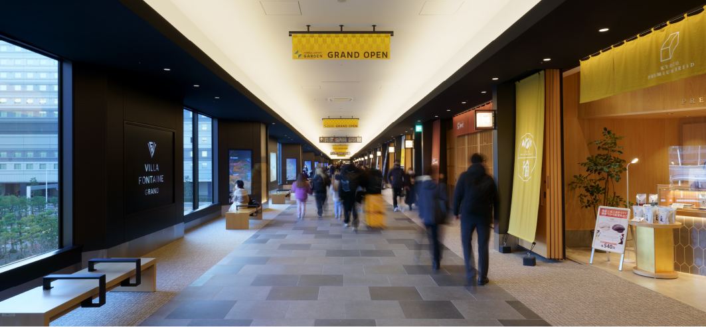
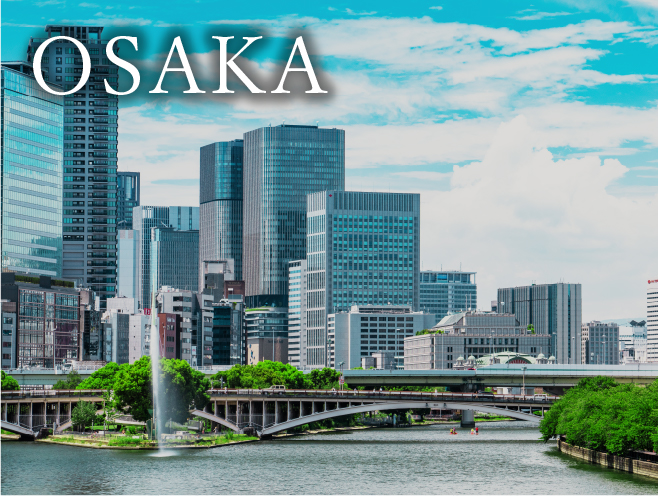
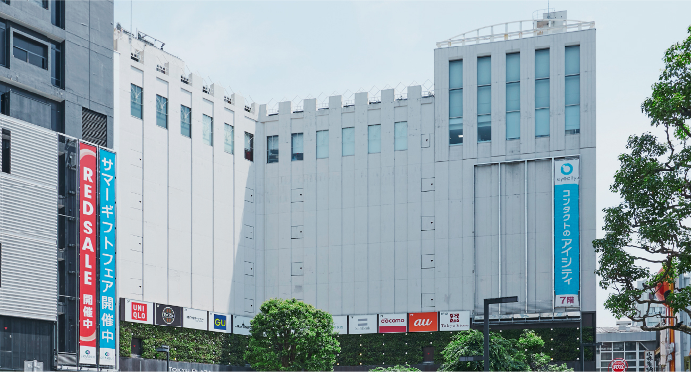

image photo
品川・羽田へ軽快。多彩なエリアが身近に。
国内外への広域アクセスに便利な交通拠点、品川・羽田を快適に利用できる「シティテラス下丸子」。休日のショッピングやレジャースポットとして人気の自由が丘や二子玉川をはじめ、魅力あふれる多彩なエリアも身近なポジションです。
広域エリア概念図
※1.高輪ゲートウェイシティ〈仮称〉（2025年度開業予定） 出典：東日本旅客鉄道株式会社ニュースリリース（2022年4月21日付）※2.リニア中央新幹線（品川・名古屋間：2027年開業予定、品川・大阪間：2045年開業予定※一部区間の工事遅延により遅れる見通しがあります。） 出典：国土交通省ホームぺージ、JR東海ホームぺージ（2023年6月現在）※3.羽田空港アクセス線〈仮称〉（2031年度開業予定） 出典：東日本旅客鉄道株式会社ニュースリリース（2023年4月4日付）
image photo
※「羽田空港第3ターミナル」駅まで►「下丸子」駅（※1）より東急多摩川線利用、「蒲田」駅／「京急蒲田」駅で京急空港線特急に乗り換え
世界の玄関口として進化を続ける「羽田空港」。
新たな賑わい拠点も次々と誕生。
日本と世界を結ぶ空の玄関口としての役割が一段と高まっている羽田空港。近年は、多彩なショップやレストラン、ホテルなどを備えた「羽田エアポートガーデン」や「羽田イノベーションシティ」のオープンによって、フライト利用以外の新たな楽しみのために多くの人々が訪れています。
羽田エアポートガーデン
（約10.5km）
-
image photo
-
「羽田空港第3ターミナル」駅に直結する大型複合施設が2023年1月にオープン。ホテル、ショッピングゾーン、天然温泉、イベントホールなどの施設が集結。また、日本各地を結ぶバスターミナルを備え、空港利用の際に気軽に立ち寄れる賑わいのスポットです。
image photo
-

image photo
■ 約80店舗のショッピングゾーン
日本の名産品や旅行グッズをはじめ、ファッション、雑貨、グルメなど多彩なショップが集結。
-

image photo
■ 展望天然温泉 泉天空の湯
飛び交う飛行機や富士山を眺めがら、心地よく湯船に浸かれる展望天然温泉。
-
羽田イノベーションシティ
（約8.4km）「羽田空港第3ターミナル」駅から1駅の「天空橋」駅に直結する、敷地面積約5.6ヘクタールの大型複合施設。ショッピングやグルメに加えて、日本文化やライブイベントといった、訪れる人に新しい体験を届ける施設が充実しています。新たなすごし方=イノベーションを提供する羽田の新たな街です。
-

image photo
※「羽田空港第3ターミナル」駅まで►「下丸子」駅（※1）より東急多摩川線利用、「蒲田」駅／「京急蒲田」駅で京急空港線特急に乗り換え
image photo
※「品川」駅まで►「下丸子」駅（※1）より東急多摩川線利用、「蒲田」駅でJR京浜東北線（平常時：JR京浜東北線快速）に乗り換え
都内屈指のターミナル駅「品川」が、
未来に向けさらなる進化を遂げる。
東京都が推進する外国企業誘致プロジェクト「アジアヘッドクォーター特区」として、グローバル化をめざしている品川エリア。開業を控える「リニア中央新幹線」の始発駅であり、「羽田空港」への連絡経路である「品川」駅は、国際交流の重要な拠点としてもさらなる発展が期待されています。
-
リニア中央新幹線の開業（予定）で、
さらに利便性が増す「品川」駅。多数の在来線やJR東海道新幹線が乗り入れる交通の要衝「品川」駅に、時速約500kmという画期的なスピードで、品川・名古屋間を最速約40分、品川・大阪間を最速約67分で結ぶリニア中央新幹線が開業予定。全線開通後は、時短メリットによる通勤、旅行エリアの拡大、ライフスタイルの変化など、イノベーションが期待されます。
-
image photo
-
image photo
image photo
-
-
※「品川」駅まで►「下丸子」駅（※1）より東急多摩川線利用、「蒲田」駅でJR京浜東北線（平常時：JR京浜東北線快速）に乗り換え
image photo
※「蒲田」駅まで►「下丸子」駅（※1）より東急多摩川線利用（直通）
駅直結の大型商業が便利な「蒲田」駅。
駅前には個性豊かな商店街も。
JR「蒲田」駅に直結する2つの大型商業施設に加えて、駅前には多くの店舗が連なり、ショッピングやカルチャー、グルメまで多彩に揃う蒲田の街。乗り換え時などに気軽に立ち寄れるスポットとして、暮らしの利便性を高めます。
-
-

-
人々を心地よく迎え
豊かな賑わいをもたらす蒲田。「蒲田」駅周辺では、羽田空港の国際化や交通環境の変化などに対応し、環境配慮も含めたまちづくりを目指す「蒲田駅周辺再編プロジェクト」が進行中。羽田空港の国際線の増便や近隣都市の再開発計画によって、観光客や来訪者による駅利用者の増加が見込まれる中、利便性の高い、環境にやさしい駅前空間の実現を推進しています。
※蒲田駅周辺再編プロジェクト（2023年12月策定）
出典：大田区ホームページ（2023年6月現在） -
※「蒲田」駅まで►「下丸子」駅（※1）より東急多摩川線利用（直通）
image photo
※「自由が丘」駅まで►「鵜の木」駅（※2）より東急多摩川線利用、「多摩川」駅で東急東横線に乗り換え
「自由が丘」へも気軽にお出かけ。
この街を休日の散策エリアにする暮らし。
洗練された街並みに、個性が集う街、自由が丘。駅前を東西に走るマリ・クレール通りをはじめ、学園通りやカトレア通りなどに店舗が点在。数々のストリートにファッショナブルでおしゃれなショップやレストランが並ぶ人気の街が、日々の暮らしを華やかに彩ります。
※「自由が丘」駅まで ►「鵜の木」駅（※2）より東急多摩川線利用、「多摩川」駅で東急東横線に乗り換え
OTHER AREA
-
-
image photo
- ※「二子玉川」駅まで ►「鵜の木」駅（※2）より東急多摩川線利用、「多摩川」駅で東急東横線急行に乗り換え、「自由が丘」駅で東急大井町線急行（平常時：東急大井町線）に乗り換え
「二子玉川ライズ」（約7.2km）や「多摩川高島屋ショッピングセンター」（約8.0km）、駅周辺に点在するカフェやレストランで、ショッピングやグルメが楽しめます。
-
-
- 「武蔵小杉」駅まで ►「鵜の木」駅（※2）より東急多摩川線利用、「多摩川」駅で東急東横線急行に乗り換え
-
image photo
駅前には、約160の専門店が集まる「グランツリー武蔵小杉」（約3.9km）や「コスギサードアヴェニュー」（約4.4km）など大型商業施設が充実。
-
-

image photo
- 「川崎」駅まで►「下丸子」駅（※1）より東急多摩川線利用、「蒲田」駅でJR京浜東北線に乗り換え
「ラゾーナ川崎プラザ」（約5.8km）などの開発によって人気エリアとなった川崎。「東芝未来科学館」（約5.7km）など親子で楽しめるレジャースポットも揃っています。
-
※「二子玉川」駅まで►「鵜の木」駅（※2）より東急多摩川線利用、「多摩川」駅で東急東横線急行に乗り換え、「自由が丘」駅で東急大井町線急行（平常時：東急大井町線）に乗り換え／「武蔵小杉」駅まで►「鵜の木」駅（※2）より東急多摩川線利用、「多摩川」駅で東急東横線急行に乗り換え／「川崎」駅まで►「下丸子」駅（※1）より東急多摩川線利用、「蒲田」駅でJR京浜東北線に乗り換え
凡例）A:エアーズコート（グランドエントランス）、B:ブリーズコート（ノースエントランス）
※1. 東急多摩川線「下丸子」駅（蒲田方面出入口）までA:徒歩9分／ B: 徒歩10分
※2. 東急多摩川線「鵜の木」駅（多摩川方面出入口）までA:徒歩8分／ B: 徒歩7分
※掲載の広域エリア概念図は一般道路、線路、施設等を抜粋して表記しています。
※掲載の電車所要時間は待ち時間・乗り換え時間を含んだ通勤時（カッコ内は平常時）の目安であり、時間帯により多少異なります。
※掲載の距離表示は地図上の概測距離です。
※掲載の環境写真は2023年7月に撮影。
※店舗・施設の内容等は将来変わる場合があります。
※掲載の情報は2023年7月現在のものです。